Research
I develop visual computing and XR methods that enable people to capture real-world environments, transform them into interactive digital representations, and experience them through immersive technologies.
Acquiring the real world reliably and accessibly.
Human-Centered Volumetric Capture
Human-centered 3D vision and AR for consistent and comprehensive scene capture.
Focal-Stack Imaging and 3D Reconstruction
Recovering depth and multi-layer scenes from focal stacks, and bringing focus cues to mixed reality.
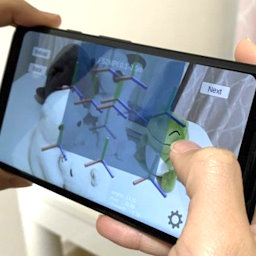
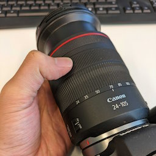
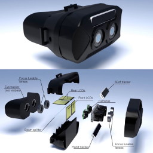
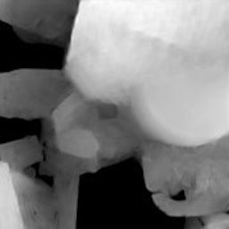
Specialized Camera Systems and View Synthesis
Multi-camera and mmWave sensing setups for occlusion-free surgical views and through-wall pose reconstruction.
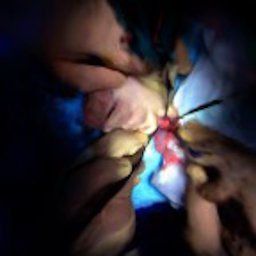
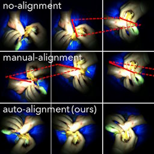
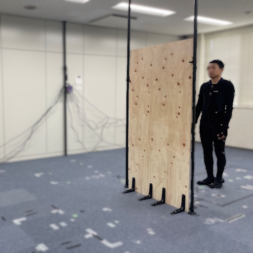
Transforming observations into interactive 3D content.
3D Scene Understanding and Scene Graphs
Structured 3D scene representations for reasoning about and interacting with the real world.
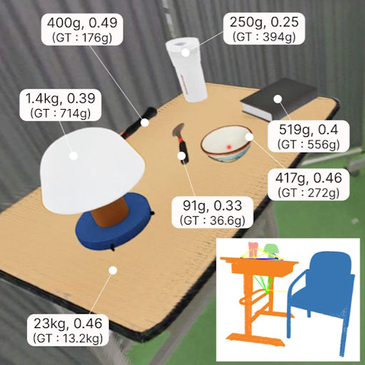
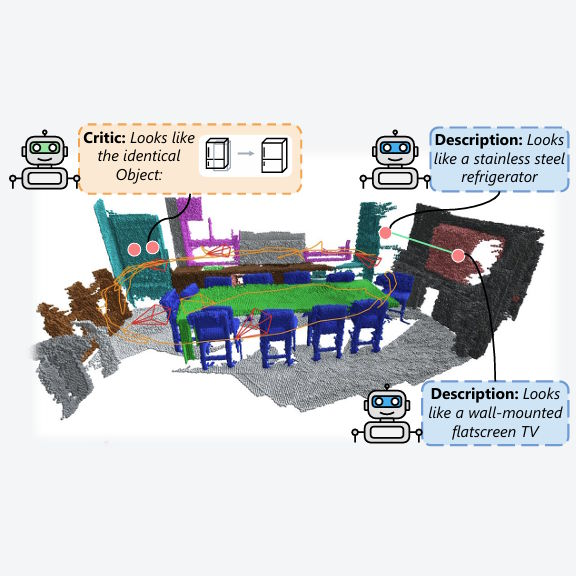
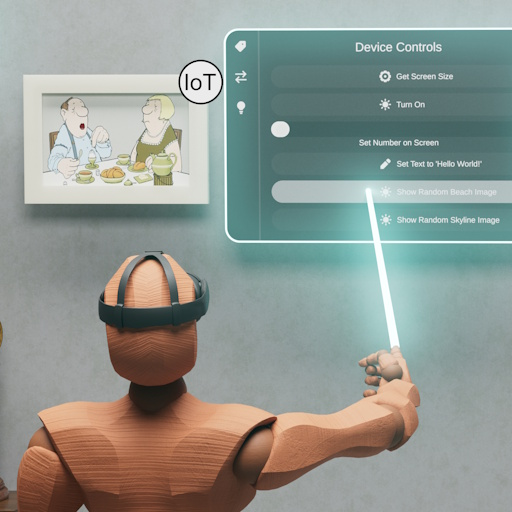
Visualization in Augmented Reality
Surveys and taxonomies of how visualizations and radiance fields are designed and used in XR.
Diminished Reality and Scene Completion
Removing 3D objects from a live scene for computationally mediated reality.
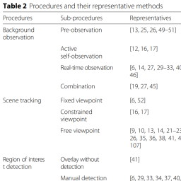
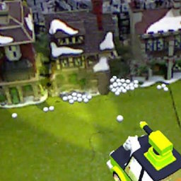
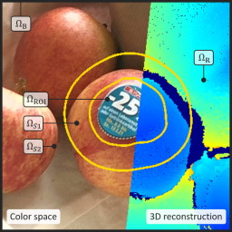
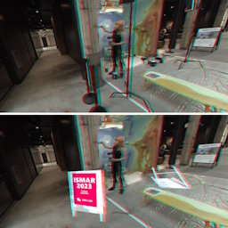
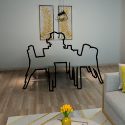
Neural Scene Representations and Rendering
Learned visibility, lighting, lens, and camera models for efficient and coherent neural rendering.
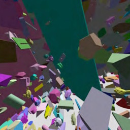
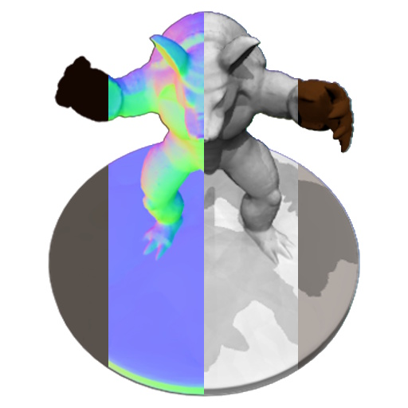
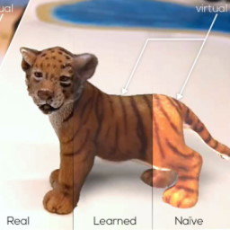
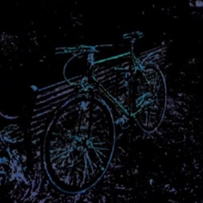
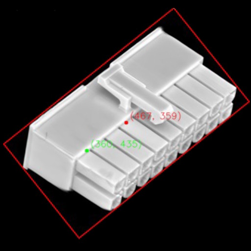
Connecting immersive content with perception and action.
Perceptual Modulation in XR
Illusory effects that arise from visual augmentation operating through mediated reality.
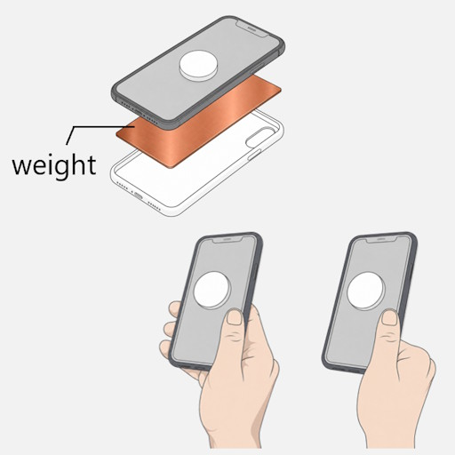
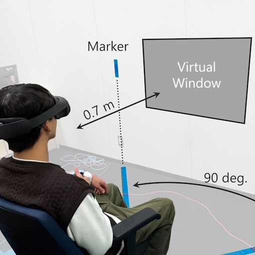
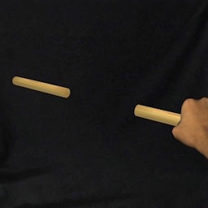
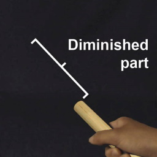
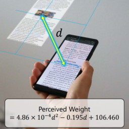
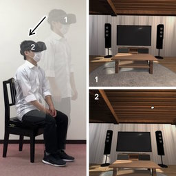
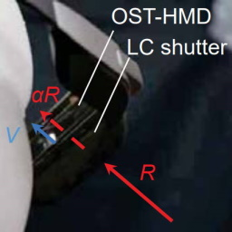
VR Locomotion and Movement Perception
How seated, walk-in-place, teleport, and avatar-based locomotion shape movement perception in VR.
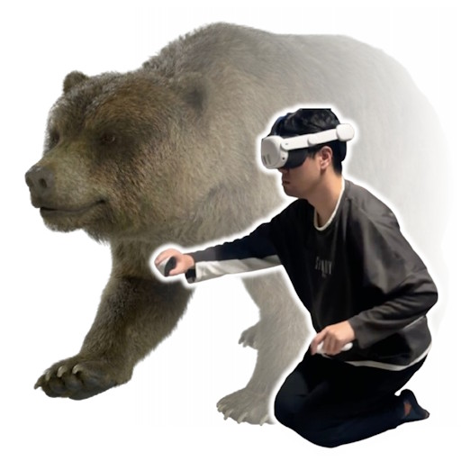
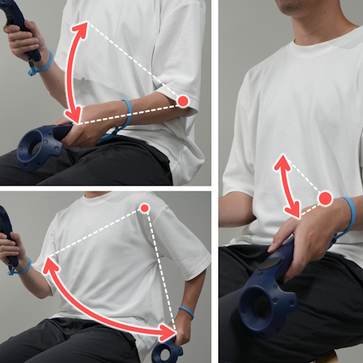
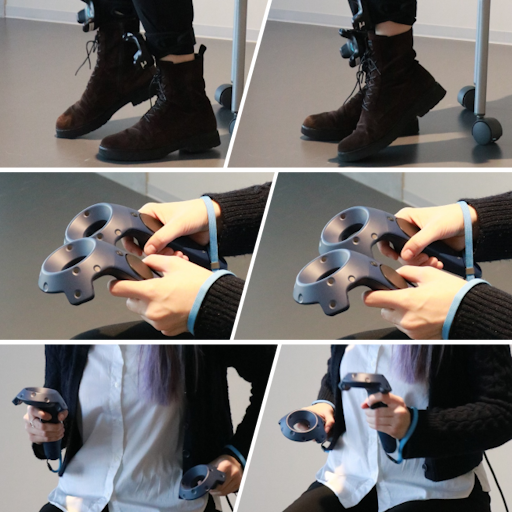
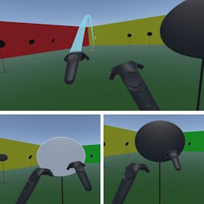
Encountered-Type Haptics
Physical feedback that meets the user on demand, such as an extendable pen for drawing above a desk.